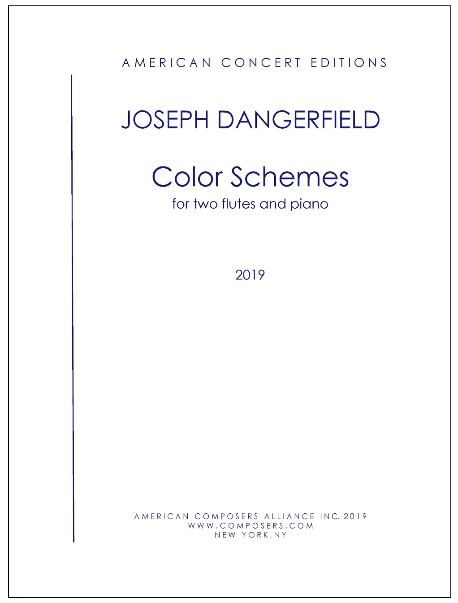

Color Schemes is a seven-movement suite for two flutes and piano that explores synesthesia—the intersection of sound, sight, and literary visual metaphor. Commissioned by flutists Nina Assimakopoulos and Matej Grahek, the work functions as a kaleidoscope of miniatures, where each movement anchors its harmonic palette and musical textures to a specific hue and literary quote.
Throughout the suite, Dangerfield leverages the timbre of two flutes to weave shimmering micro-canons, rapid register shifts, and blended harmonic colors over an expansive piano backdrop. Rather than illustrating narrative scenes, the score treats color as a lens for acoustic atmosphere, ranging from airy silence to brilliant metallic intensity.
An ethereal opening that uses delicate, floating textures and pale harmonics to capture Kandinsky's vision of white as a "blank slate" filled with quiet possibility.
The expansive centerpiece of the work. Piercing flute lines and crisp piano sonorities mimic the cold, radiant glint of metal and Scriabin's mystical approach to light.
A brief, elegant vignette defined by fluid phrasing, warm woodwind textures, and lyrical contours.
A concentrated miniature that transitions from staccato, rigid structures into lush, open harmonic landscapes.
An earthy, grounded interlude using lower-register flute sonorities and dark, resonance-rich piano chords.
A brief, melancholic reflection that translates blue hues into spacious intervals and atmospheric decay.
The work concludes in deep shadow, drawing the ensemble into intimate, hushed dynamics that resolve the suite back into darkness and absolute silence.